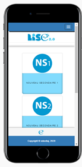
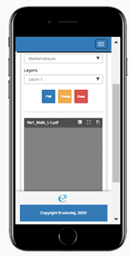
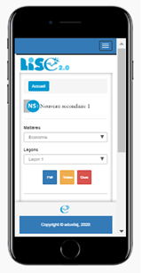
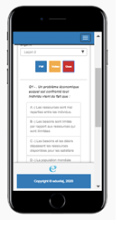

Presentation et mode d’utilisation de l’application LISE 2.0
LISE 2.0/Présentation
Conformément aux instructions officielles de 2015 relatives à la généralisation graduelle et encadrée des nouveaux programmes du secondaire rénové, cette application dénommée LISE 2.0 propose de mettre en œuvre un enseignement décloisonné de l’ensemble des matières de la filière d’enseignement général pour commencer.
C’est un dispositif d’apprentissage en ligne et hors ligne (mode local) utilisant les Technologies de l’Information et de Communication (TIC) et accessible à partir de supports numériques variés. L’interface de l’application LISE 2.0 à l’ouverture, présente les quatre (4) niveaux d’enseignement du secondaire : Première année du Secondaire ou Secondaire I ou NS1, Deuxième année du Secondaire ou Secondaire II ou NS2, Troisième année du Secondaire ou Secondaire III ou NS3 et Quatrième année du Secondaire ou Secondaire IV ou NS4.
Plusieurs fenêtres situées en haut et à droite de votre ordinateur ou tablette ou téléphone intelligent donnent des détails sur l’application et renvoient à de ressources pédagogiques et informations utiles aux utilisateurs (Élèves, Enseignants, Parents et Responsables d’Établissements scolaires), il s’agit des fenêtres : Accueil, Ressources pédagogiques, Coin des Enseignants, A propos de nous, Contact et Présentation de l’Application.

Chaque niveau d’enseignement donne accès à des contenus pédagogiques en différents formats numériques. En cliquant sur NS1 par exemple une page s’ouvre sur le champ des Matières et des Leçons et les trois (3) boutons; Le bouton bleu permettant l’affichage des contenus PDF, le bouton jaune donnant accès aux capsules vidéo et le bouton rouge qui facilite la vérification des apprentissages à travers un Quiz tiré de la leçon

